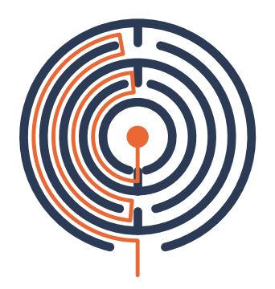
| App | Ariadne, a read-only root-cause agent for Kubernetes (Track B). It names the object that has to change and cites only evidence it was shown, or answers inconclusive. |
|---|---|
| Model | Qwen3.8-27B in FP8 on vLLM 0.29.0, one worker per HAMi half |
| Cluster | One NVIDIA H100 80 GB on Lambda Cloud, single-node k3s, split by HAMi into two halves of 39 GiB and 50% of the compute |
| Gateway | Go gateway that guards, admits, places and queues every call, with an opt-in Mooncake KV hop and KEDA scaling of the vLLM pool |
| Agent workload | A LangGraph agent with 11 read-only tools, 5 to 16 chained model calls per run, replaying a golden set of 26 faults recorded from a real cluster |
| Measured | 27 September to 8 October 2026, across four GPU sessions (A100, H100 PCIe, H100 SXM5) |
| Data | metrics/ (golden rows and summaries, Prometheus scrapes, time series), report/report.ipynb, design/findings.md (F1 to F47), design/decisions.md (D-1 to D-51) |
| Repository | github.com/cduggn/Ariadne |
Ariadne is an agent that diagnoses Kubernetes faults by calling read-only tools, and the system around it is a self-hosted
inference stack: a Go gateway in front of two vLLM workers that share one H100 through HAMi. Cluster data is restricted, so
it never leaves the team's own GPUs. Every number below comes from a committed file in metrics/, and each
carries its finding number (F) from design/findings.md.
| Item | Value |
|---|---|
| Model | Qwen3.8-27B, FP8 weights (28.8 GiB). A hybrid model: Gated DeltaNet layers keep a fixed recurrent state, and only its full-attention layers hold KV (64 KiB per token) |
| Engine | vLLM 0.29.0 (vllm-openai:v0.29.0-cu129, pinned by digest). v0.30.0 crash-loops on start (F19) |
| Engine settings | context 24,576 tokens; at most 32 sequences; 8,192 batched tokens per step (chunked prefill); prefix caching on; gpu_memory_utilization 0.90 of the slice |
| Sampling | Qwen3 non-thinking: temperature 0.7, top_p 0.8, top_k 20; at most 768 output tokens per call; tool_choice auto (D-38) |
| Agent | LangGraph state graph over LangChain tools; 11 read-only tools; step caps of 16 (investigate), 30 (audit) and 12 (right-size); stops before a 23,000-token context |
| Golden set | 26 tasks: 14 easy, 7 multi-hop, 4 red herring, 1 right-sizing. Scored deterministically by evals/checker.py (v2, D-41) |
| Access path | Agent on the laptop → SSH tunnel → gateway Service on the node → vLLM worker. Every call carries X-Request-Id, X-Tenant, X-Priority and X-Data-Class: restricted |
Everything runs on one Lambda Cloud instance with a single H100 80 GB, managed as a one-node k3s cluster. make up
takes the first GPU with capacity (GH200, then H100, then A100), and one cloud-init detects the card and deploys the matching
topology (F18). HAMi splits the card into two slices so two vLLM workers share it. Prometheus scrapes every component, and
Grafana shows three dashboards.
| Pod | Role | GPU memory | Compute | KV cache (tokens) | 24,576-token runs that fit |
|---|---|---|---|---|---|
| vllm-0 | prefill and decode | 39 GiB | 50% | 51,092 | 2.08 |
| vllm-1 | prefill and decode | 39 GiB | 50% | 51,092 | 2.08 |
| Total | 78 of 80 GB | 100% | 102,184 | 4.2 |
Table 1. The inference pods, their HAMi slices, and the KV pool vLLM reported at start-up
(metrics/kv-qwen3.8-27b-fp8-h100-half-20261006-125054.log). Each worker does its own prefill and decode;
there is no prefill/decode split.
| Component | Deployment | Configuration |
|---|---|---|
| Gateway | 1 pod, Go, public image pinned by digest | Guard (400), tenant token quota (429), KV and queue deadline (503); in-flight cap 4 per worker (D-43); priority queue per worker with deadlines of 10 s (interactive) and 30 s (batch); prefix_then_load placement; warm-up probes before a worker takes traffic |
| KV hop | vLLM's MooncakeConnector, gateway flag | Moves a run's KV to the other worker when its history is at least 8,192 tokens and the copy is cheaper than recomputing it (D-42) |
| KEDA | ScaledObject on statefulset/vllm | 1 to 2 workers; demand trigger (in flight + queued ÷ 4) and a capacity-shed trigger; 15-minute scale-down window (D-49, D-51) |
| Observability | kube-prometheus-stack, Grafana, DCGM exporter | Scrapes the gateway, both workers and the GPU; three dashboards; five alert rules (D-45) |
| Agent | laptop, Python 3.12, python -m agent | Read-only by construction: a kubectl verb allowlist, no Secrets, no exec; LangSmith tracing forced off |
Table 2. Other components.
kv_transfer_params get a 400.kv_free, timeout_queue) and a Retry-After.
Only a 503 may leave the box, and a restricted request never does (fuzz test and alert).| Issue | Cause | Resolution |
|---|---|---|
| vLLM v0.30.0 crash-loops at start | The image ships a cu130 torch with a cu129 torchvision (vllm#59157) | Stay on v0.29.0, pinned by digest (F19) |
| Agent's tool calls collapsed into whitespace (0/5) | tool_choice="required" made vLLM constrain decoding with a grammar that degenerated | tool_choice="auto" with the model card's sampling; the agent nudges a reply with no tool call (D-38) |
| Malformed tool-call arguments crashed a run | The model sometimes sent a JSON string holding a Python dict | Turned into an invalid tool call the model is told about; the run continues (D-39) |
| Three billed nodes after a slow boot | make up retried a launch that had already created the instance | make up refuses while a node exists; make resume finishes a slow boot (F20, F21) |
| Overflow backend unavailable | The provider returned HTTP 402 for every call despite a credit grant | Overflow decided but left null; restricted traffic never overflows anyway (F22) |
| Sweep rows for Qwen3.8 written to one file | Path.with_suffix cut the tag at the dot in "qwen3.8" | Fixed in the runner, with a test; summaries were unaffected (F37) |
Table 3. Problems met on the way and how each was resolved.
serving/fit.py predicts, for every model and topology, the weights, the KV bytes per token, the KV pool, and how
many requests fit at full length and at the app's length. vLLM then reports the pool it actually allocated. A gate refuses
to deploy a pairing that can't hold one full-length request.
| Model, where | Weights | KV per token | Paper pool | Measured | Gap |
|---|---|---|---|---|---|
| Qwen3-8B-AWQ, A100 20 GiB slice | 5.7 GiB | 144 KiB | 79,699 | 79,056 | −0.8% |
| Qwen3-30B-A3B AWQ, whole A100 | 16.9 GiB | 96 KiB | 197,563 | 185,136 | −6.3% |
| Qwen3.8-27B-FP8, whole H100 | 28.8 GiB | 64 KiB | 653,004 | 525,797 | −19.5% |
| Qwen3.8-27B-FP8, H100 39 GiB half | 28.8 GiB | 64 KiB | 77,926 | 51,092 | −34.4% |
Table 4. KV pool in tokens, paper against vLLM's own start-up report. Qwen3.8 also keeps about 147 MiB of recurrent state per sequence, which the token count doesn't show.
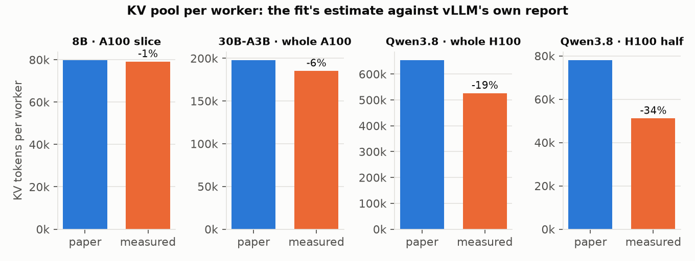
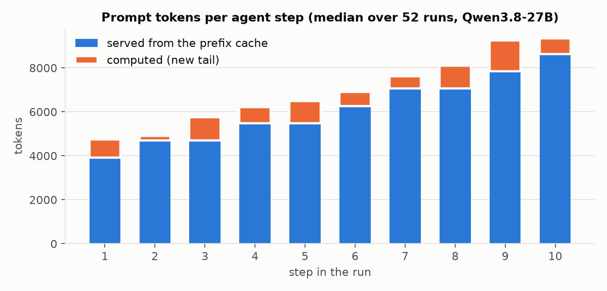
All benchmarks are the agent itself: the golden set at a fixed number of concurrent runs, through the gateway, each run making its chained calls. Pass rates are v2 with 95% Wilson intervals.
prefix_then_load (sticky) | least_loaded | |
|---|---|---|
| v2 pass [95% CI] | 86.5% [74.7–93.3] | 88.5% [77.0–94.6] |
| Cached share of prompt | 87.8% | 85.6% |
| Uncached prompt tokens prefilled | 416,445 | 459,909 (+10.4%) |
| Step latency p50 | 2.86 s | 3.10 s (+8%) |
| Step latency p95, steps after the first | 25.3 s | 28.1 s (+11%) |
| Continuing steps back on their run's worker | 94% | 77% |
Table 5. The routing A/B: the golden set twice per arm at 4 concurrent runs, only the pick policy changed (F29).
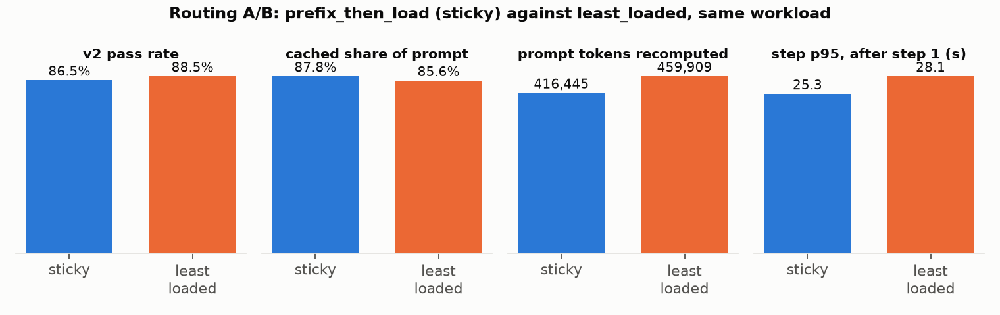
least_loaded picks the run's previous worker 77% of the time anyway and both workers hold the shared
prefix from warm-up. We expect it to widen under uneven or heavier load, which no run has tested (F29).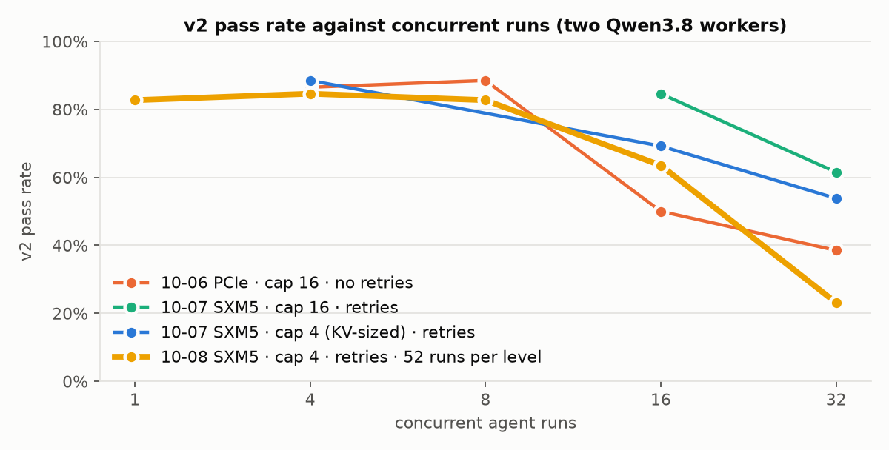
| Concurrent runs | v2 pass [95% CI] | Refused by the gateway |
|---|---|---|
| 1 | 82.7% [70.3–90.6] | 0 |
| 4 | 84.6% [72.5–92.0] | 0 |
| 8 | 82.7% [70.3–90.6] | kv_free 1 |
| 16 | 63.5% [49.9–75.2] | timeout_queue 127, kv_free 38 |
| 32 | 23.1% [13.7–36.1] | timeout_queue 220, kv_free 33 |
Table 6. The 10-08 sweep on an H100 SXM5: cap 4, refusal retries, 52 runs per level. The 8B on an A100 stayed at 48–56% at every level, so its limit is the model, not capacity (F40).
| Cap 4 (sized to KV) | Cap 16 (old) | |
|---|---|---|
| v2 pass at 16 / 32 concurrent runs | 69.2% / 53.8% | 84.6% / 61.5% |
| vLLM preemptions added (16 / 32) | 1 / 2 | 9 / 34 |
| Cached share of prompt (16 / 32) | 81.3% / 81.6% | 73.3% / 72.7% |
| Step latency p95 (16 / 32) | 21.8 s / 21.7 s | 25.3 s / 26.9 s |
| Refusals | timeout_queue 42 / 83 | kv_free 58 / 132 |
Table 7. Same node, both with retries. Sizing admission to KV keeps the engine healthy (about 95% fewer preemptions, 8 points more cache, about 15% lower tail latency) but finishes fewer runs, because queued requests hit their deadline before the retries run out. The pass-rate intervals overlap at 26 runs per level, so the completion gap is suggestive. The next step is a cap of 6–8, or a longer interactive deadline (F36).
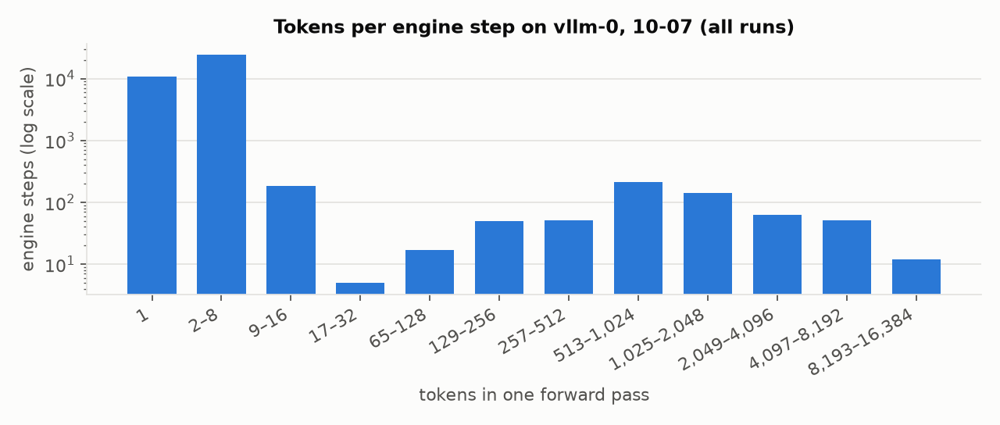
make bench ends with three probes against a golden run at 4 concurrent runs, then make export saves
the node's Prometheus history for the whole window. The probes are: three 10.5k-token batch prompts, three clients that
disconnect after 3 s, and deleting one worker. The marks on each chart are the probe times.
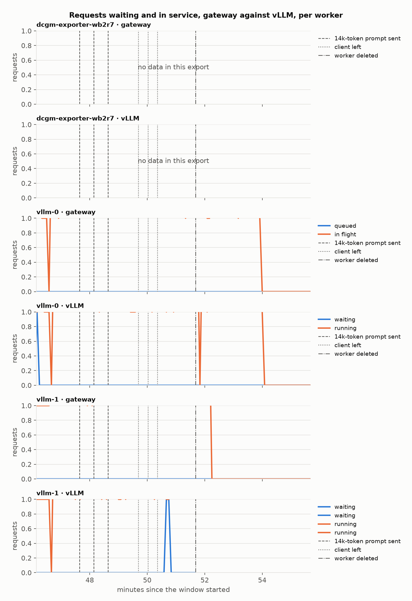
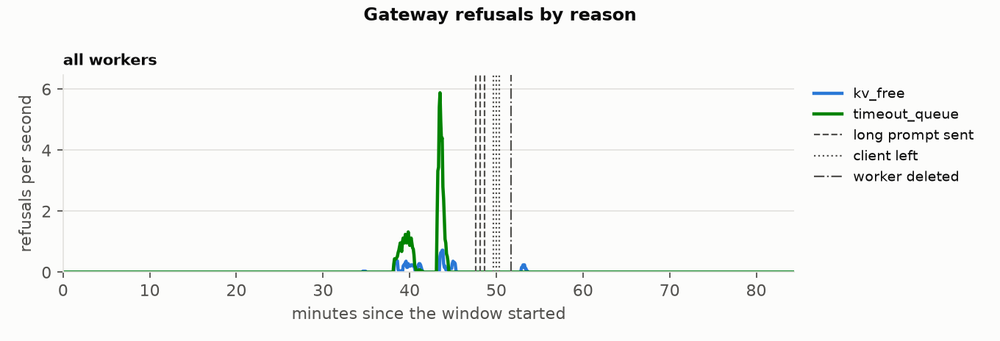
timeout_queue
(a request waited past its deadline) rather than kv_free (F32).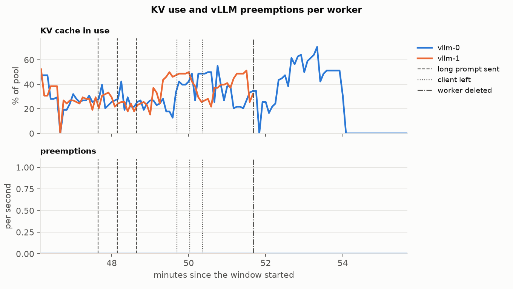
| Probe | Result | Finding |
|---|---|---|
| A 10.5k-token batch prompt | Each returned in 2.1–2.5 s. The agents' inter-token latency p95 stayed at 49 ms, as in the minute before. One prompt adds two large prefill steps among many small decode steps, so a p95 can't show it. | F42 |
| A client leaves after 3 s | vLLM's abort counter stayed at 0 on both workers. Either the cancellation doesn't reach vLLM, or vLLM 0.29 doesn't count a disconnect as an abort. The gateway logs client_gone but has no metric for it. | F43 (open) |
| A worker is deleted | The gateway marked it down 12 s later and the other worker took every placement. It was warming 5 min 35 s after deletion and ready 2 s later. Two in-flight runs ended on a 502; the agent now retries that 502. | F44 |
Table 8. What each probe showed.
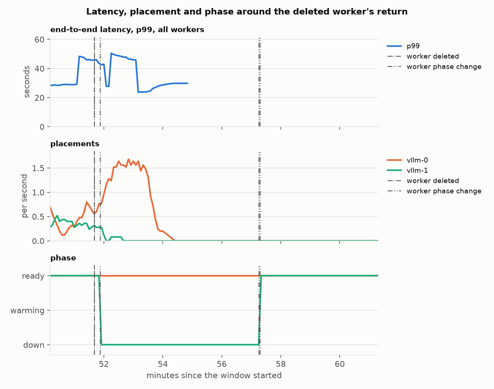
The vLLM pool is the only pool, and KV per worker is the limit, so KEDA adds workers rather than slots. It scales
statefulset/vllm from 1 to 2 workers (the two halves of one H100) on two triggers, both Prometheus recording
rules with promtool tests:
kv_free, queue_full, timeout_queue and the like) adds a worker.
A tenant over its quota doesn't count, because that isn't a capacity problem.| Run (10-07, H100) | Workers | v2 pass | What happened |
|---|---|---|---|
as-up | 1, then 2 | 59.6% | Concurrency 8 on one worker shed about 0.4 requests a second. The shed trigger asked for a second worker about 80 s in; it was created at 23:30:49 and ready at 23:39:10, 8 min 21 s later, after the run had ended. |
as-up2 | flapped | 57.7% | KEDA removed the second worker 40 s into the next run, because the 10-minute window ran out before the new load reached the 2-minute averages, then re-created it. |
as-up3 | 2 | 84.6% | With the window at 15 minutes (D-51) both workers stayed, and the run shed nothing. KEDA removed the second worker 15 quiet minutes after the run. |
Table 9. The autoscaling session (F39). vLLM reported no errors or aborts. The runs lost on one worker
ended on gateway refusals (18 in as-up, 16 in as-up2), and with two workers none did. The pass rate
follows the worker count, and two workers come back near the 86.5% baseline.
Each golden task is a fault recorded from a real cluster plus an answer key the agent never sees. The checker is deterministic: nothing is judged by a model. A run passes v2 when the diagnosis names the right root object and category, states the right mechanism, cites only evidence the tools actually showed it during the run, and blames no victim or red herring (D-41).
| Model, where | v2 pass [95% CI] | By tier (v2) |
|---|---|---|
| Qwen3-8B-AWQ, A100 slice, direct | 51.9% [38.7–64.9] | easy 68, multi-hop 43, red herring 25, right-sizing 0 |
| Qwen3-8B-AWQ, two A100 slices, through the gateway | 48.1% [35.1–61.3] | easy 61, multi-hop 43, red herring 25, right-sizing 0 |
| Qwen3-30B-A3B AWQ, whole A100 | 67.3% [53.8–78.5] | easy 75, multi-hop 50, red herring 75, right-sizing 50 |
| Qwen3.8-27B-FP8, two H100 halves, through the gateway | 86.5% [74.7–93.3] | easy 89, multi-hop 71, red herring 100, right-sizing 100 |
Table 10. Model quality on the golden set, 26 tasks run twice each (F1, F2).
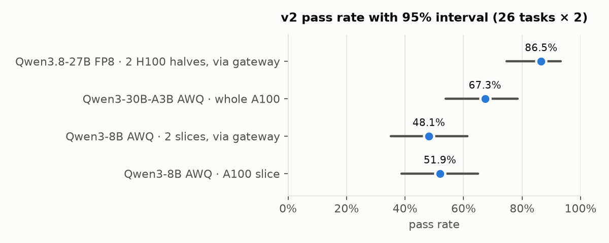
inconclusive after the allowed repairs. They run out of steps rather than reasoning wrongly. The
other two each passed on their repeat (F3).describe tool rejected a capitalised kind 101 times, and
diagnoses with more than 8 evidence refs failed validation 24 times, including runs that had found the right cause (F4).inconclusive
instead of an ungrounded answer (D-24).| Tier | What it tests | Rules and dashboards |
|---|---|---|
| easy | The pod's own status names the cause | Find these without a model |
| multi-hop | The symptom is on a victim and the cause elsewhere: an expired upstream certificate, an OOM-killed database, a LimitRange, a ResourceQuota | Point at the victim |
| red herring | The obvious suspect is healthy: a wrong CA bundle, a probe starved of CPU, a Service port, pod DNS | Point at the suspect |
| right-sizing | Idle against throttled against not worth changing | Give numbers, not judgement |
Table 11. The tiers (D-31). Qwen3.8-27B scores 71% on multi-hop and 100% on red herrings, where the 8B scored 43% and 25%.
| Alert | Fires when |
|---|---|
KVCacheSaturated | KV above the gateway's 0.80 shed line for 5 minutes |
GatewayQueueWaitHigh | Queue wait p95 above 5 s, half the interactive deadline |
VLLMPreempting | Any preemption for 5 minutes |
DoctorInconclusiveRateHigh | Over 20% of diagnoses inconclusive in an hour |
RestrictedRequestOffBox | Any restricted request leaves the box (critical) |
Table 12. promtool tests check that each rule fires on its condition and stays quiet just below it (D-45).
orch_restricted_offbox_total was 0 in all 13 gateway scrapes.
| Question | What would settle it |
|---|---|
| Does the KV hop move the KV, or does the destination recompute? | Force a hop and compare the hopped step's cached tokens; vLLM 0.29 has no transfer metric (F35, F45) |
| Does vLLM free a departed client's KV? | A gateway counter for client_gone, plus vLLM's running count and KV in the seconds after (F43) |
| What is the right cap? | Sweep caps 6 and 8 at 52 runs per level against Table 7 |
| How does a returning worker ramp under load? | Background load that outlasts its 5.5-minute return (F44) |
| How does the agent do on a live cluster? | Inject faults on the node's k3s and time detection and diagnosis with agent watch |
Table 13. Each needs a GPU session of 10 to 30 minutes.
From the 10-08 H100 session, covering the golden run, the sweep from 1 to 32 concurrent runs, and the probes (about 100 minutes). Five panels have known display problems, listed in F46.
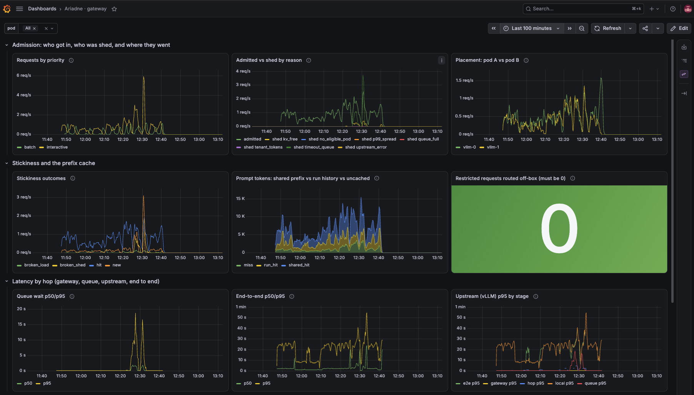
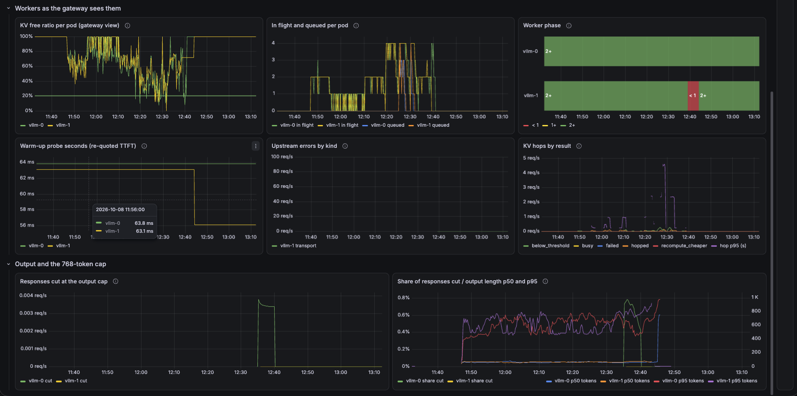
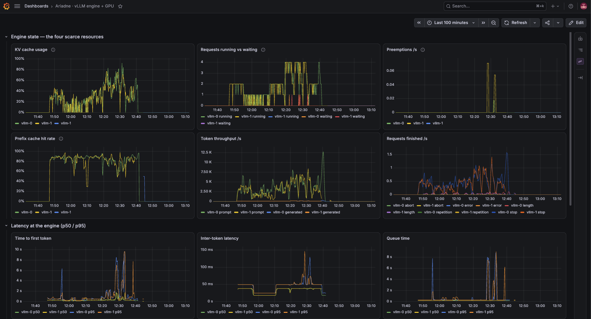
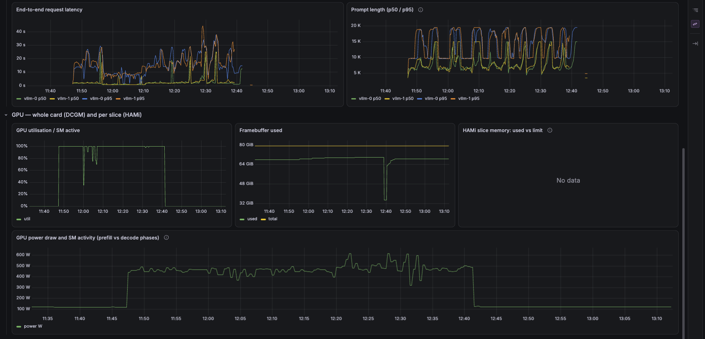
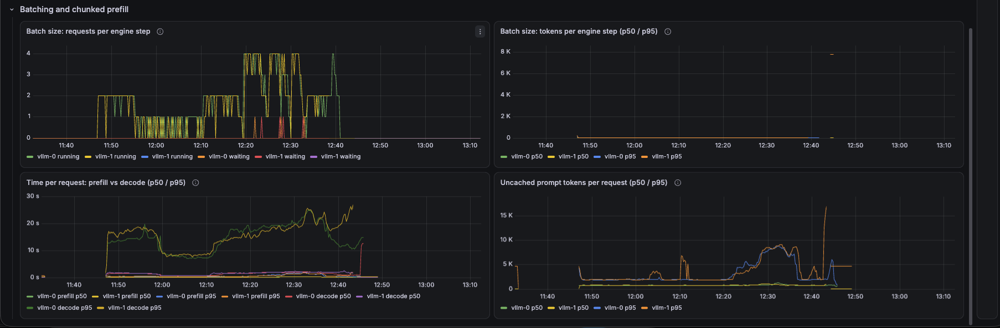
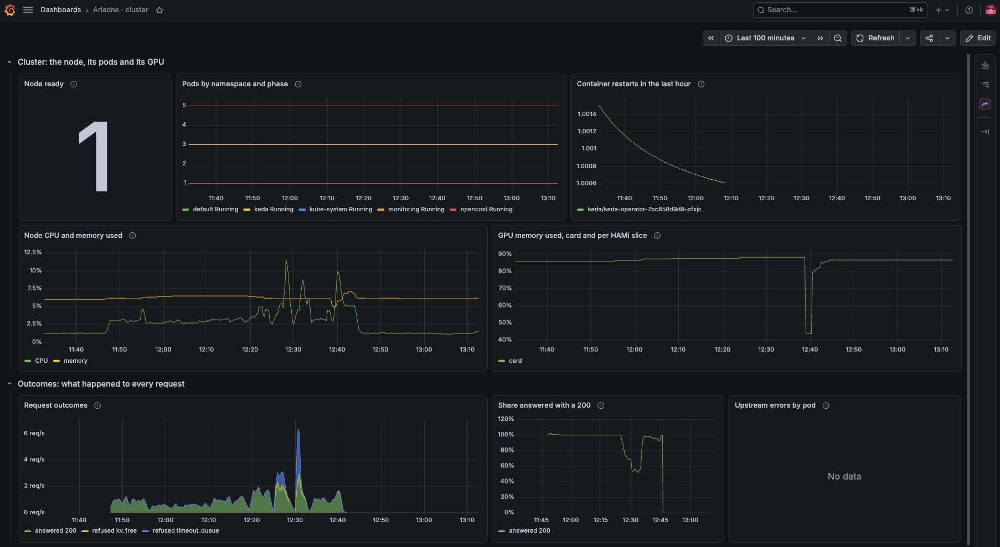
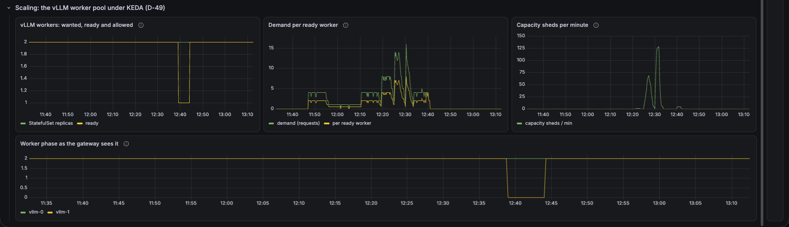
uv sync && make lint test # Python, Go and the alert rules; CI runs the same make report # rebuild the notebook and figures from metrics/ make matrix # regenerate the model matrix (CI fails if stale) # break a local kind cluster on purpose make lab-up && make inject FAULTS=oom
make preflight && make up # lint + tests + fit gate, then the first GPU with capacity make bringup # deploy → scale → measure KV → gateway → dashboards make tunnel # terminal 2: the gateway at localhost:8000 make grafana # terminal 3: Grafana at localhost:3000 make check # both workers ready through the gateway, KV hop on or off make bench TAG=q1-h100 # golden set + sweep 1→32 + metrics + probes + export # the routing A/B's control arm make gateway POLICY=least_loaded && make bench TAG=q1-h100-ll git add metrics && git commit # the node's Prometheus keeps nothing make down # billing stops
| Path | What |
|---|---|
metrics/golden-*.jsonl, *.summary.json | One row per agent run (every step's latency, tokens, refusals, tool calls, the diagnosis and its score), and the summary per run tag |
metrics/{gateway,vllm-0,vllm-1}-*.prom | Prometheus scrapes taken at the end of each level |
metrics/ts-*.json, events-*.jsonl | Time series for the bench window, and the probe times |
report/report.ipynb | Every chart in this report, rebuilt from metrics/ |
design/findings.md | F1–F47, each labelled measured, estimate, observed or unverified, with its file |
design/decisions.md | D-1–D-51: what was chosen, why, and when to revisit it |
evals/golden/, faults/, fixtures/ | The tasks and answer keys, the fault manifests, and the recorded cluster output |